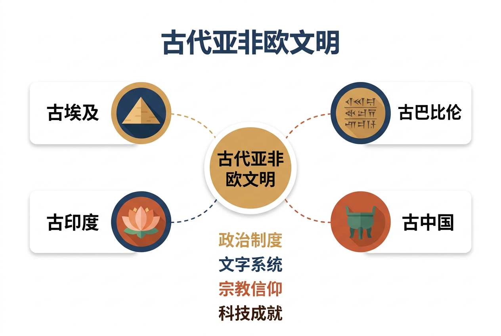
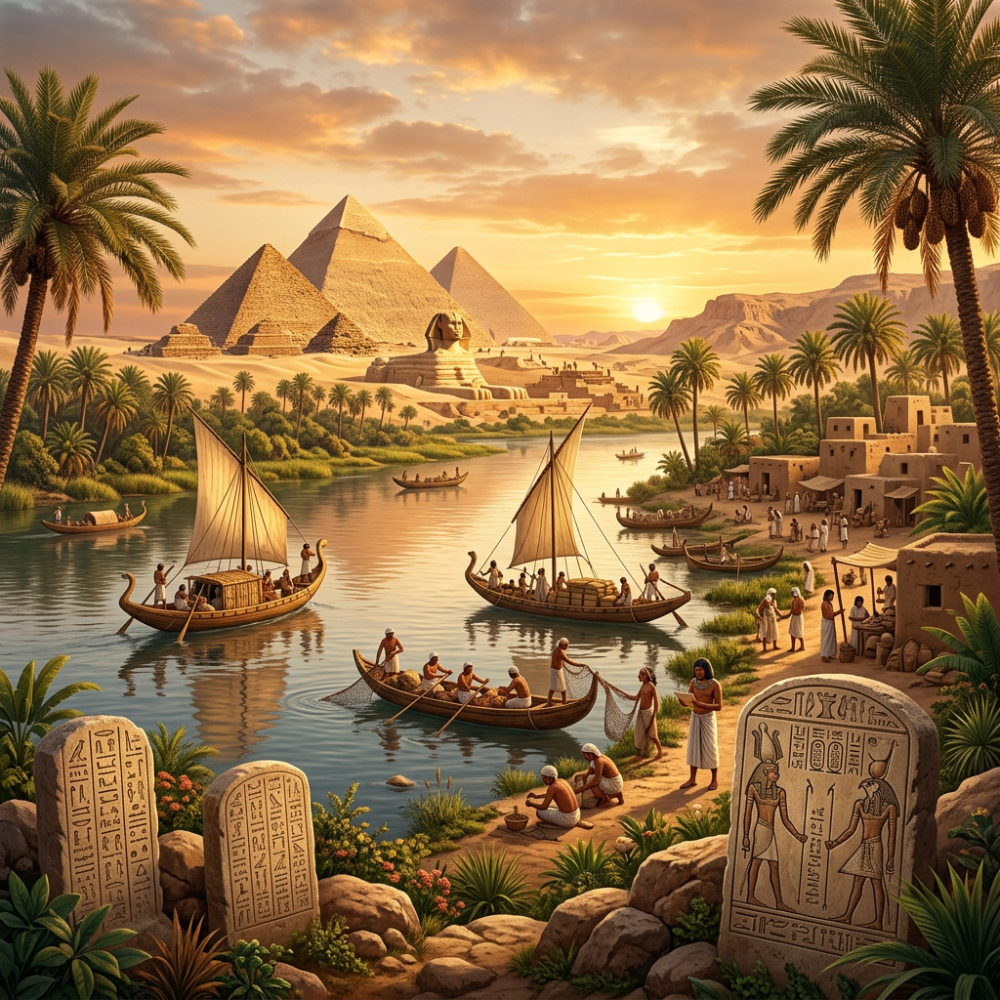
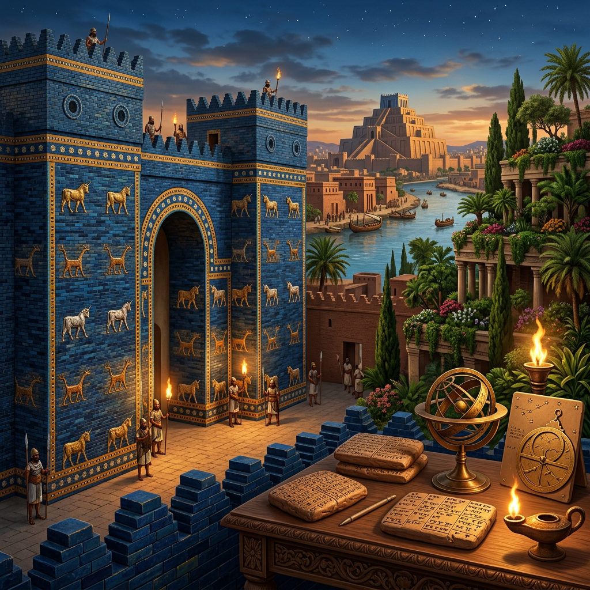

从尼罗河到黄河，从两河流域到印度河——探索人类文明的共同起点与多元演化

能在地图上准确定位四大古文明的地理位置，说明其与河流的关系
从政治、经济、文化、宗教四个维度比较四大文明的异同
分析大河流域对文明诞生的决定性作用，理解地理环境与文明的关系
评价各文明对后世的影响，理解人类文明的多元性与共通性
3 道题，摸清自己对古代文明的已有认识，点选项看反馈。
【And · 已经知道】你知道中国是四大文明古国之一，也知道金字塔在埃及——这些"常识"背后，藏着一个更大的问题。
【But · 问题来了】为什么人类最早的文明，几乎全诞生在大河流域？为何相隔万里却几乎同时发明文字、城市和法律？巧合还是必然？
【Therefore · 所以要学】对比四大文明，学会用"地理环境—经济—制度—文化"分析框架解释文明的诞生与演化——这是高考"比较类"大题的核心方法。
在公元前4000年至前2000年间，世界上最早的几个文明中心几乎不约而同地诞生在大河流域。这绝非巧合——大河提供了三个关键条件：
尼罗河畔 · 金字塔 · 象形文字
两河流域 · 汉谟拉比法典 · 楔形文字
印度河 · 哈拉帕文明 · 种姓制度
黄河长江 · 甲骨文 · 礼乐制度

古埃及文明场景：尼罗河谷日出时分，金字塔矗立在远方
古希腊历史学家希罗多德说："埃及是尼罗河的赐礼。"每年6月至10月，尼罗河定期泛滥，退水后留下肥沃的黑色淤泥。埃及人据此发展出精密的历法（太阳历365天）和灌溉系统，创造了高度繁荣的农业文明。
| 领域 | 成就 | 世界意义 |
|---|---|---|
| 文字 | 象形文字（圣书体） | 罗塞塔石碑成为破译关键 |
| 建筑 | 金字塔、神庙 | 世界七大奇迹之首 |
| 数学 | 十进制、几何学 | 土地丈量催生几何 |
| 医学 | 木乃伊技术、外科手术 | 最早的医学文献 |
| 天文 | 太阳历（365天） | 现代公历的源头 |

古巴比伦伊什塔尔门与空中花园想象复原图
底格里斯河与幼发拉底河之间的美索不达米亚平原（今伊拉克），是人类最早的城市文明诞生地。苏美尔人约在公元前3500年创造了楔形文字，随后阿卡德人、古巴比伦人相继在此建立强大王国。这片土地没有天然屏障，历经无数次征服与融合，形成了世界上最早的"文明熔炉"。
约公元前1776年，古巴比伦国王汉谟拉比颁布了人类历史上第一部较完整的成文法典，共282条法律，涵盖财产、婚姻、劳动、商业等领域。法典石柱顶部刻有汉谟拉比从太阳神沙马什手中接受权杖的浮雕，象征着"王权神授"与"法律面前（相对）平等"的理念。
印度河流域的哈拉帕文明（约前2500—前1750年）是一个令考古学家惊叹的谜。摩亨佐·达罗和哈拉帕两座城市展现出惊人的规划能力：棋盘式街道、标准化砖块、完善的下水道系统、公共浴池——这在公元前2500年简直不可思议。然而，他们的印章文字至今无人破解。
约前1500年，雅利安人南迁印度，带来了梵语和吠陀文化，形成了延续至今的种姓制度（婆罗门、刹帝利、吠舍、首陀罗）。古印度的思想贡献深刻影响了世界：
点击不同时代按钮，观察各时期文明的兴衰变迁。地图使用真实地形底图，彩色区域标注各文明控制范围。
| 维度 | 古埃及 | 古巴比伦 | 古印度 | 古中国 |
|---|---|---|---|---|
| 河流 | 尼罗河 | 底格里斯河/幼发拉底河 | 印度河/恒河 | 黄河/长江 |
| 文字 | 象形文字 | 楔形文字 | 印章文字（未破解） | 甲骨文→汉字 |
| 政体 | 法老制（神王合一） | 君主制（王权神授） | 城邦制→吠陀王权 | 分封制→郡县制 |
| 宗教 | 多神教（太阳神拉） | 多神教（马尔杜克） | 婆罗门教→佛教 | 祖先崇拜→儒道 |
| 代表建筑 | 金字塔 | 塔庙（Ziggurat） | 大浴池/窣堵波 | 殷墟宫殿/长城 |
| 核心贡献 | 太阳历/几何学 | 法典/六十进制 | 零的概念/佛教 | 造纸/指南针 |
| 延续性 | 被外族征服后中断 | 被波斯征服后中断 | 部分中断后复兴 | 持续至今未中断 |